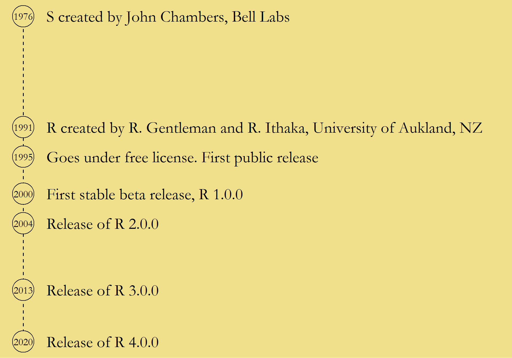
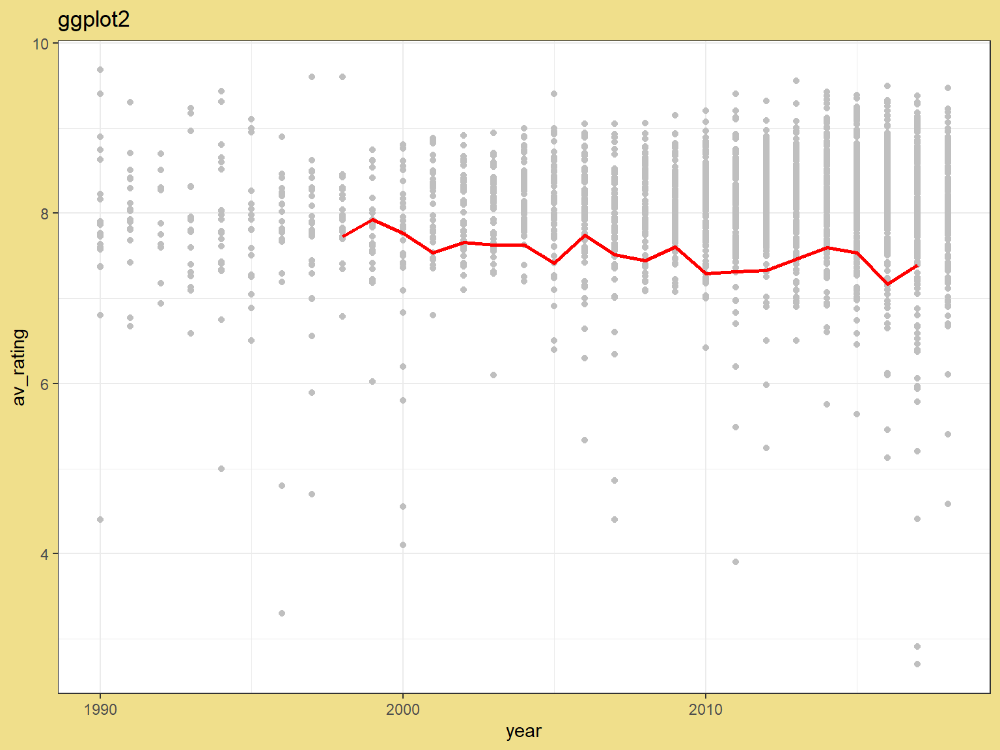

Session 27: Introduction to R
3 November 2025
Basic Biostatistics and Bioinformatics
A seminar series on fundamentals
Organised by SLUBI and Statistics at SLU
Presentation of background and a practical exercise
Topics
- 17 November. Introduction to VS Code
- 1 December. Introduction to Linux
- 15 December. Reproducible science
- 12 January. Principal Component Analysis (PCA)
Topic suggestions are welcome
SLUBI
- SLU bioinformatics center
- Weekly online drop-in (Wednesdays at 13.00)
- slubi@slu.se, https://www.slubi.se
- Alnarp: Lizel Potgieter (Dept. of Plant Breeding)
Statistics at SLU
- SLU statistics center
- Free consultations for all SLU staff
- statistics@slu.se
- Alnarp: Mohammad Ghorbani, Jan-Eric Englund and Adam Flöhr (Dept. of Biosystems and Technology)
Today’s Presentation
R & RStudio
Data handling
- Filter
- Select
- Transform
Plotting
Some RStudio features
Troubleshooting
Exercise session
Introduction

Open software used for statistical analysis
Code-based interface
R & RStudio
R itself is the programming language
The installation of the language comes with a basic interface
Most users work in more advanced interfaces, the most common of which is RStudio
Installation of R & RStudio
CRAN in left frame > Select any mirror > Select depending on operating system
RStudio. https://posit.co/
Products > Select open version > Select RStudio Desktop > Select free version
Base R & Packages
R is extended by creating new functions
Collections of functions are called packages
The basic installation comes with a set of packages
New packages can be installed from CRAN (the Comprehensive R Archive Network)
Working in R. Objects
In R, information is stored as named objects
Objects are stored by writing a name followed by the assign
arrow <-
Objects can be very simple, like a single number
## [1] 3A bit more complex, like a vector (an ordered sequence of numbers)
## [1] 3 14 159And more complex still, like a collection of vectors in a data frame
## x y
## 1 1 a
## 2 2 b
## 3 3 cFunctions
Objects are created and changed using functions
Function take some input and produce an output
Functions typically have a set of arguments, allowing the user to control its behaviour
Called using the function name followed by the input and arguments in brackets
## [1] 176The output of a function can be printed directly or stored as a new object
## [1] 176NA is used for missing values
## [1] NA## [1] 176Code structure and piping
Many different ways to structure code with several steps
Simple example: (i) given a vector, (ii) transform with the logarithm, (iii) take the sum.
1. Store each step and use in next line
## [1] 8.806574Data import
Base R and add-on packages include multiple functions to import data
The specific choice of function depends on the data type
The file path can be specified relative a working directory - the base folder of the current R session
## # A tibble: 2,266 × 7
## titleId seasonNumber title date av_rating share genres
## <chr> <dbl> <chr> <dttm> <dbl> <dbl> <chr>
## 1 tt2879552 1 11.22.63 2016-03-10 00:00:00 8.49 0.51 Drama…
## 2 tt3148266 1 12 Monkeys 2015-02-27 00:00:00 8.34 0.46 Adven…
## 3 tt3148266 2 12 Monkeys 2016-05-30 00:00:00 8.82 0.25 Adven…
## 4 tt3148266 3 12 Monkeys 2017-05-19 00:00:00 9.04 0.19 Adven…
## 5 tt3148266 4 12 Monkeys 2018-06-26 00:00:00 9.14 0.38 Adven…
## 6 tt1837492 1 13 Reasons… 2017-03-31 00:00:00 8.44 2.38 Drama…
## 7 tt1837492 2 13 Reasons… 2018-05-18 00:00:00 7.51 2.19 Drama…
## 8 tt0285331 1 24 2002-02-16 00:00:00 8.56 6.67 Actio…
## 9 tt0285331 2 24 2003-02-09 00:00:00 8.70 7.13 Actio…
## 10 tt0285331 3 24 2004-02-09 00:00:00 8.72 5.88 Actio…
## # ℹ 2,256 more rowsTransforming and adding columns
Columns can be transformed or added by using functions on existing columns
- Using
$and the assign arrow<-
- Using piping and
mutate
Note that we still have to assign in order to store the new data frame
Selecting
Selecting takes a subset of columns
The show names are in the third column, called title
- Using
$and the name
- Using
[]and an index
- Using piping and
select
Filtering
Filtering takes a subset of rows
We pick out seasons with an average rating (av_rating)
above 9
- Using
[]and a logical statement
- Using piping and
filter
Sorting
Sorting gives a re-ordering of the data
We order by average rating
- Using
[]andorder
Note the use the argument decreasing to get the highest
ratings first
- Using piping and
arrange
Note the use of - to get the highest rating first
Results
dat_tv %>% # Take the TV data, then ...
filter(title == "Midsomer Murders") %>% # filter for title being Midsomer Murders, then ...
arrange(-av_rating) %>% # sort by average rating in decreasing order, then ...
select(title, seasonNumber, av_rating, genres) # select a subset of columns## # A tibble: 19 × 4
## title seasonNumber av_rating genres
## <chr> <dbl> <dbl> <chr>
## 1 Midsomer Murders 2 7.92 Crime,Drama,Mystery
## 2 Midsomer Murders 3 7.76 Crime,Drama,Mystery
## 3 Midsomer Murders 9 7.74 Crime,Drama,Mystery
## 4 Midsomer Murders 1 7.73 Crime,Drama,Mystery
## 5 Midsomer Murders 5 7.66 Crime,Drama,Mystery
## 6 Midsomer Murders 6 7.63 Crime,Drama,Mystery
## 7 Midsomer Murders 7 7.63 Crime,Drama,Mystery
## 8 Midsomer Murders 12 7.61 Crime,Drama,Mystery
## 9 Midsomer Murders 16 7.59 Crime,Drama,Mystery
## 10 Midsomer Murders 17 7.54 Crime,Drama,Mystery
## 11 Midsomer Murders 4 7.53 Crime,Drama,Mystery
## 12 Midsomer Murders 10 7.51 Crime,Drama,Mystery
## 13 Midsomer Murders 11 7.44 Crime,Drama,Mystery
## 14 Midsomer Murders 8 7.41 Crime,Drama,Mystery
## 15 Midsomer Murders 19 7.39 Crime,Drama,Mystery
## 16 Midsomer Murders 15 7.33 Crime,Drama,Mystery
## 17 Midsomer Murders 14 7.32 Crime,Drama,Mystery
## 18 Midsomer Murders 13 7.29 Crime,Drama,Mystery
## 19 Midsomer Murders 18 7.17 Crime,Drama,MysteryAggregating
Aggregating calculates a summary value over a subset of values
We calculate mean rating across seasons
- Using the
aggregatefunction
- Using piping,
group_byandsummarise
## # A tibble: 868 × 2
## title mean_rating
## <chr> <dbl>
## 1 11.22.63 8.49
## 2 12 Monkeys 8.83
## 3 13 Reasons Why 7.97
## 4 24 8.58
## 5 24: Legacy 7.20
## 6 24: Live Another Day 8.90
## 7 39814 8.27
## 8 666 Park Avenue 7.47
## 9 7th Heaven 7
## 10 8 Simple Rules 8.17
## # ℹ 858 more rowsPlots
Base R includes functions to make plots
Highly customizable
Can add elements using functions like points(),
lines() and text()
Plots. ggplot2
library(ggplot2)
ggplot(dat_tv, aes(year, av_rating)) +
geom_point(col = "grey75") +
geom_line(data = dat_tv %>% filter(title == "Midsomer Murders"),
col = "red", size = 1) +
ggtitle("ggplot2")
Many packages extend the plotting functionality, most notably
ggplot2
Variables are specified in a special aes() function
(aestethics)
Plot elements are added as geoms (geometries)
RStudio
The RStudio window is divided into several frames
Code is run in the Console frame
Scripts
One usually writes code in a script (a separate text file)
File > New file > R Script
Lines from the script are run in the console by clicking the Run button or ctrl + enter
Scripts are saved with the file extention .R, but are just basic text files which can be opened in any text editor
Divide into sections and comment specific rows using
#
RStudio. Projects
File > New project…
Creates a new folder for storing scripts, data, and output
Keeps the material contained, making it easier to keep track of changes and to share
Opening the project automatically sets the working directory to the project folder
Perfect to keep track of scripts written during a course
Something about style
R does not read empty space
Divide into several steps and add spaces and line breaks to make readable code
is more readable than
RMarkdown / Quarto
RMarkdown and Quarto allows one to mix written text and R code
The file can then be rendered into some standard format
File > New file > R Markdown… or Quarto Document…, then select file type
Possible output file types include html, pdf, and word
Troubleshooting
Every function has a help page
Either search in the Help frame in RStudio or run
?function_name
Always read error messages carefully
Use Google and Stack Overflow
Resources
R website: http://r-project.org
RStudio website: https://posit.co/
RStudio cheat sheets: https://posit.co/resources/cheatsheets/
Grolemund & Wickham, R for Data Science, https://r4ds.had.co.nz/
Wickham, Navarro & Pedersen, https://ggplot2-book.org/
The End. Stick around for practical exercise